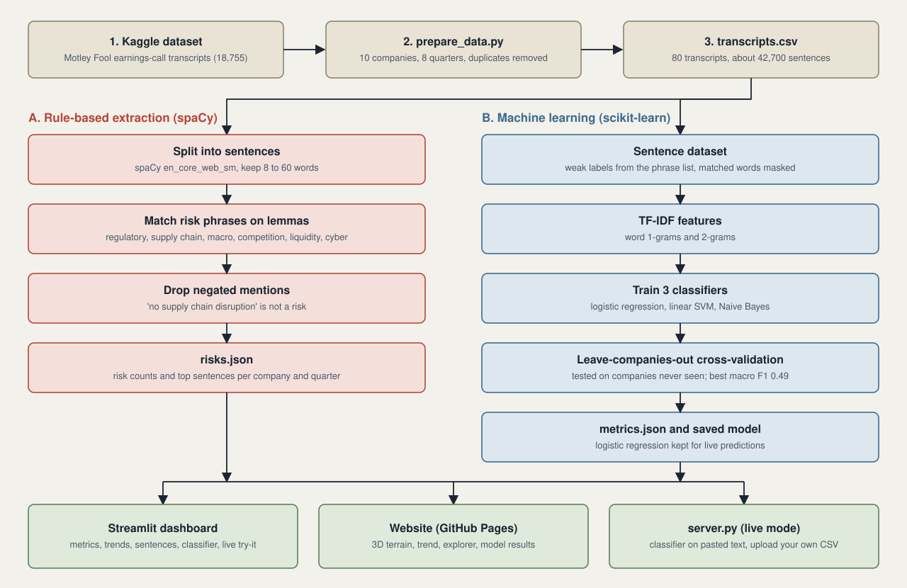

On an earnings call, management explains what went wrong and what might. This project reads the transcripts and counts how often each kind of risk comes up, quarter by quarter, so a rising trend is easy to spot before you read the full text.
A CSV with company, quarter and transcript text.
spaCy's English pipeline splits each call into sentences and keeps those of 8 to 60 words.
Lemma-based matching finds phrases for six types: regulatory, supply chain, macro, competition, liquidity and cyber. Negated mentions such as "no supply chain disruption" are skipped.
Counts and the top sentences per type go to one JSON file, read by this page and the Streamlit dashboard.

These numbers come from the small sample in data/sample_transcripts.csv, not real calls.
| Quarter | Type | Sentence |
|---|
Rows are the true type, columns what the model predicted.
Labels come from the keyword list, so these scores measure how well context alone recovers them, not agreement with human annotators.
Live mode needs the Python server: run python server.py and open http://127.0.0.1:8000
Upload a CSV with a company, a quarter and a transcript column. The Python pipeline runs on it and this whole page updates.
pip install -r requirements.txt python -m spacy download en_core_web_sm python -m fault_lines.cli python -m fault_lines.dataset python -m fault_lines.train python server.py # this website, connected to the Python code streamlit run app.py # the dashboard
Swap in a Kaggle earnings-call CSV with --csv, --company-col, --quarter-col and --text-col.
Phrase matching misses implied risk, and counts grow with call length. Use the counts to decide what to read, not as a verdict.